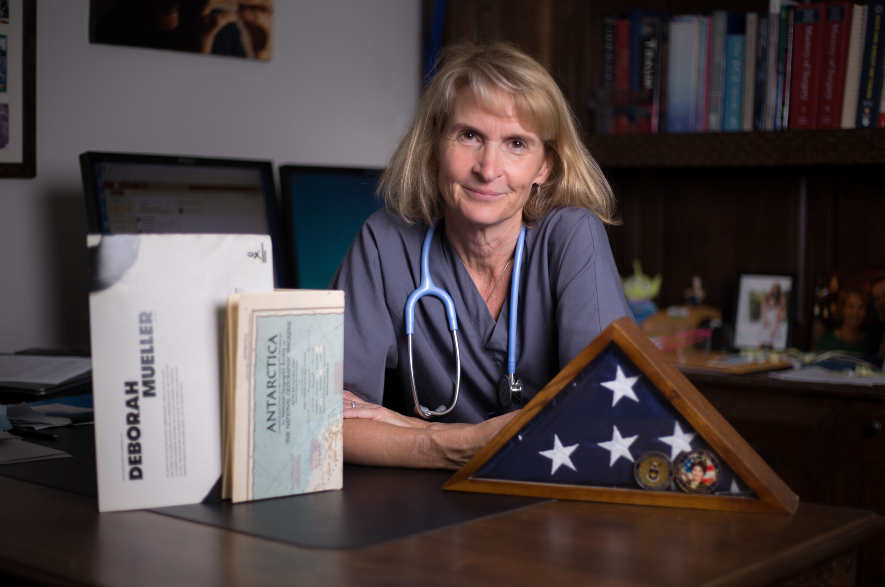

The Dr. Deborah L. Mueller Endowment in Resident Education and Wellness: A timeless gift to honor a lifetime of service.
May 30, 2025
This simple imperative from an exceptional physician perfectly encapsulates the compounding nature of choosing to do good. Dr. Deborah Mueller lived her mission in every setting and every situation, as a physician for the US Air Force, a humanitarian utilizing her skills in crisis zones around the globe, and ultimately as nationally-renowned trauma surgeon, mentor, and teacher at UT Health San Antonio.
Dr. Mueller compounded her impact on the surgical field by serving as a mentor to surgical residents and an advocate for women in medicine. She knew the importance of conveying the humanity necessary to being an effective healer. She was the one who answered the call for patients who had limited or no good options. In those cases, she was the best surgeon in the world and the compassionate hand that would stay by the patient’s bedside, no matter how long the journey of recovery.
Dr. Mueller’s choice to do good was also fundamental to her role in guiding aspiring doctors on their career and life paths. She was committed to helping her students become not just the best physicians but the best people they could be. As one of her students said, “She changed my life…she re-framed what it meant to be a surgeon, a leader and a mentor.”
“We should not distance ourselves from engaging on things we are passionate about. We can effect change through subtle actions to encourage the future to be better.”
A gift with limitless impact.
The legacy of Dr. Deborah Mueller is one of giving the best of yourself to make lives better. It is in that spirit that Dr. John Doski, Dr. Mueller's husband, gave $1M to establishThe Deborah L. Mueller Endowment in Resident Education and Wellness. The Mueller Endowment funds a cause dear to Dr. Mueller: the well-being and growth of surgical residents.
With perpetual financial support provided by an endowment, residents enjoy improved working conditions and quality of life, opportunities for developing leadership skills, mentorship for women in surgery, and travel support for global health outreach programs. This investment in surgical residents is compounded as these future doctors become the best they can be, serving thousands of patients each year, and every day answering Dr. Mueller’s call to do good, wherever it is.
Why give to an endowment? An endowment grows forever in its ability to effect change in a cause you are passionate about.
Learn more about Dr. Mueller’s life and legacy.